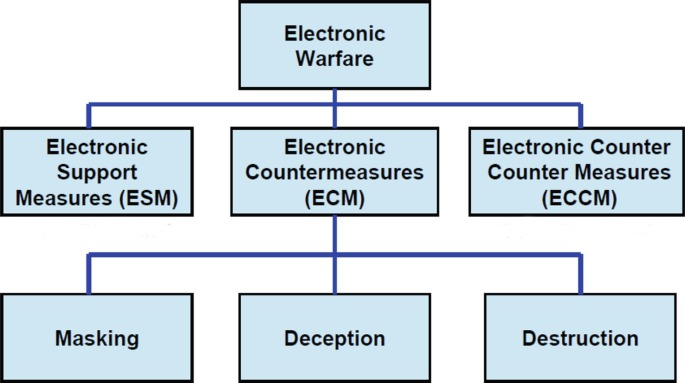
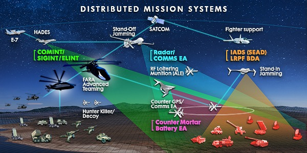

Electronic Warfare, auch EW genannt, ist ein Überbegriff für unzählige Arten von Kriegsführung ohne physikalische Waffen, sondern durch elektromagnetische Wellen. Die drei Hauptarten sind ECM (Electronic Countermeasures), ECCM (Electronic Counter Countermeasures) und ESM (Electronic Support Measures). Alle drei funktionieren in der Theorie ähnlich, werden in der Praxis jedoch völlig unterschiedlich eingesetzt.
Kurz gesagt: ECM ist die aktive Störung gegnerischer Einheiten durch elektromagnetische Wellen – man „kontert“ also die elektronischen Fähigkeiten des Gegners, indem man diese stört. ECCM ist das genaue Gegenteil: Hier schützt man die eigenen elektronischen Fähigkeiten vor gegnerischen ECM‑Maßnahmen, man „kontert“ also den „Counter“. ESM ist ein grösserer Überbegriff für alles, was mit der Nutzung, Erfassung und Verarbeitung elektromagnetischer Signale zu tun hat. Es umfasst also Aufklärung und Spionage sowie jegliche weitere Unterstützung elektronischer Fähigkeiten, wie zum Beispiel Kommunikation und Zielfindung.
Zu ECM zählen hauptsächlich Signal Jamming und Spoofing sowie EMP‑Waffen, schadhafte Software und mehr. Hierbei muss erwähnt werden, dass EMP‑Waffen und schadhafte Software schon fast eher zu Electronic Attack als zu Electronic Countermeasures gehören.
 Bei Signal Jamming wird ein feindliches Signal einfach nur gestört oder unterbrochen. Das Zielsignal kann dabei nahezu alles sein: Kommunikationssignale, Radar, Waffensysteme, GPS, Sensoren – und in gewissen Fällen können sogar Computer ausgeschaltet werden.
Spoofing ist wesentlich komplexer. Man greift zwar immer noch dieselben Signale an, möchte diese jedoch nicht mehr nur stören, da der Gegner das sofort bemerken würde. Stattdessen versucht man, die Signale so zu beeinflussen, dass der Gegner ein verändertes Signal empfängt, ohne zu merken, dass es manipuliert wurde. Auf diese Weise können ihm und seinen Computersystemen falsche Informationen zugeführt werden.
EMP‑Waffen und schadhafte Software wie Viren haben eine völlig andere Mission: Sie sollen die Computer- und Softwaresysteme des Gegners permanent zerstören, anstatt sie – wie bei Jamming und Spoofing – nur zu unterbrechen. EMPs tun dies, indem sie die Hardware beschädigen, während Viren die Software‑Ebene angreifen.
Ein Beispiel für ECM sind Systeme wie das AN/ALE‑50 oder das AN/ALE‑70 der F‑35. Dies sind sogenannte „Towed Decoys“, also kleine Kapseln, die an einem Kabel hinter dem Flugzeug hergezogen werden. Ihr Zweck besteht darin, gegnerische Sensoren so auszutricksen, dass sie auf die Kapsel statt auf das Flugzeug zielen.
Während es früher spezialisierte Flugzeuge für ECM gab, wie zum Beispiel die EA‑6B Prowler, ist es heute immer häufiger der Fall, dass jedes Flugzeug seine eigenen ECM‑Systeme mitführt. Diese können das Flugzeug meist schützen und tarnen, sind jedoch in ihrer offensiven Einsatzfähigkeit begrenzt. Für weiterreichende elektronische Angriffe gibt es deshalb auch heute noch spezialisierte Flugzeuge wie die EA‑18G Growler.
Wenn ECM immer wichtiger wird, wird natürlich auch ECCM immer besser, da es ja der direkte Gegenpart zu ECM ist. ECCM ist jedoch deutlich passiver. Es geht nämlich eher darum, seine Elektronik ECM-resistent zu machen, anstatt aktive ECM-Massnahmen zu bekämpfen. Hierzu verwendet man vor allem Materialien für Computer und Sensoren, die weniger strahlenanfällig sind, und macht seine Software widerstandsfähiger gegen Viren.
Man kann allerdings auch fortschrittlichere Methoden einsetzen. Viele moderne Waffensysteme sind so gebaut, dass sie Spoofing und Jamming erkennen und dann in einen Modus wechseln, ins dem sie entweder auf alternative, nicht gespoofte Lenkmethoden zurückgreifen oder sogar beginnen, das Jamming-Signal als Wegweiser zu benutzen und direkt darauf zuzufliegen. Das nennt man dann "Home in on Jamming". Auch diese Fähigkeit besitzen heute fast alle modernen Flugzeuge. Es ist also ein ständiges Wettrennen zwischen ECM und ECCM, wer im Moment gerade stärker und nützlicher ist.
Electronic Support Measures sind ein viel grösseres und weniger definiertes Feld von Fähigkeiten. Was sicher dazugehört, ist das aktive Unterdrücken von Jamming und Spoofing sowie das Aufrechterhalten von sicherer und stabiler Kommunikation. Man könnte ausserdem Datalink und Sensorfusion dazu zählen. Etwas weniger gut definiert ist, ob Dinge wie AWACS, also luftbasierte Radarstationen wie die E-3 Sentry, ELINT und SIGINT, also Electronic und Signal Intelligence und Buddy Lasing, also Zieldesignation durch Support-Flugzeuge, noch zur Electronic Warfare gehören. Im weitesten Sinne sind Electronic Support Measures jegliche technischen Mittel, welche mithilfe von Signalen und Elektronik freundlichen Einheiten helfen. Nach NATO-Definition müssen ESM-Technologien ausschliesslich passiv agieren, und somit gehören Jamming Suppression, AWACS und ELINT / SIGINT nicht zu ESM. Nach der breiteren, und hier verwendeten, internationalen Definition ist das jedoch nicht so definiert.
In der immer moderneren und digitaleren Kriegsführung werden diese drei Typen der elektronischen Kriegsführung immer wichtiger. Allerdings gibt es ein paar sehr markante Vor- und Nachteile dieser Strategie, die es zu beachten gilt. Zu den Vorteilen gehört vor allem die Kosteneffizienz der elektronischen Kriegsführung. Es ist wesentlich günstiger, ein gegnerisches Radar einfach zu blockieren, als ein teures Flugzeug mit einer teuren Bombe und einem sehr empfindlichen „Fleischbeutel“ im Cockpit loszuschicken, um das Radar zu zerstören. Ausserdem gibt es noch den selbstverstärkenden Kreislauf, dass Elektronik im Krieg immer wichtiger wird und deshalb EW (Elektronische Kriegsführung) immer wichtiger wird. Deshalb muss man immer modernere und bessere Systeme entwickeln, um EW-resistenter zu werden, sodass EW dann wieder weiterentwickelt werden muss – und so weiter. Es gibt jedoch auch Nachteile. Einerseits benötigen die Systeme, die EW ermöglichen, hochmoderne, teure und komplexe Chips, die im Kriegsfall schwer zu bekommen sind. Ausserdem brauchen EW-Systeme sehr viel Strom, eine Ressource, die in einem Flugzeug eher nicht im Überfluss vorhanden ist. Als Resultat produzieren die Systeme auch sehr viel Hitze, die ebenfalls irgendwie abgeführt werden muss.
Auch in der elektronischen Kriegsführung ist Künstliche Intelligenz ein Thema. Einerseits kann man KI verwenden, um Jamming und Spoofing aufzuspüren und zu bekämpfen. Andererseits könnte man mithilfe von KI auch Systeme bauen, die vollständig autark sind und somit keine Signale von aussen benötigen. Damit wären diese Systeme dann praktisch immun gegen Spoofing und Jamming. Ein Gegenargument ist jedoch, dass die wachsende Nutzung von Elektronik, Computern und KI die Systeme auch immer anfälliger für elektronische Attacken macht. Es ist also auch hier eine Balance zu finden zwischen genug Technik für die benötigten Fähigkeiten, aber nicht so viel Technik, dass eine elektronische Attacke alles lahmlegen kann.